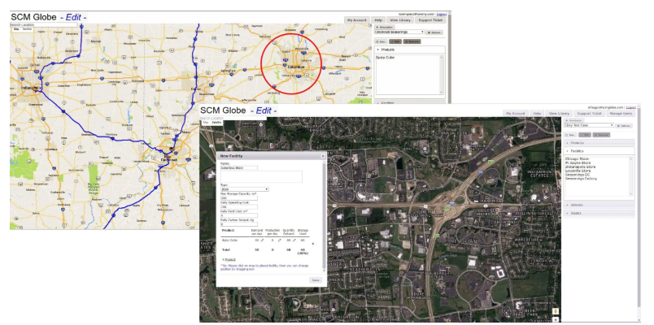

I can assist with SCM Globe assignments for a reasonable fee. Whether you need help with supply chain design, logistics planning, optimization, analysis, or completing your assignment on time, I provide reliable and affordable assistance.

Completing SCM Globe simulation coursework requires designing a functional supply chain that runs without error for a specified number of simulated days (usually 7, 14, or 30 days) while maintaining low operating costs. I specialize in helping students configure products, warehouses, transport vehicles, and routes correctly so that the simulation succeeds.
Here is what you get when you choose my academic tutoring support:
- ✔ Affordable rates tailored to university student budgets
- ✔ Fast turnaround, including last-minute and urgent requests
- ✔ Quality work backed by years of supply chain analysis experience
- ✔ Confidential service keeping your personal details private
Contact Me on WhatsApp
Ready to get your SCM Globe simulation working correctly? Contact me on WhatsApp today to discuss your assignment guidelines and get a free quote.
Get SCM Globe Help on WhatsApp